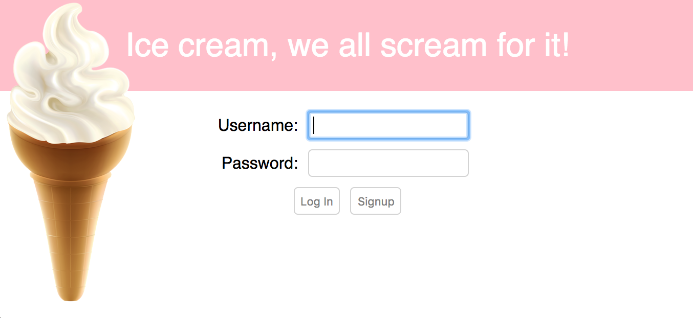

Many people talk about how easy it is to build web applications using Node.js. However, it's difficult to find resources that walk though all the steps. We will do that here. Some details will be omitted. We want to focus on the primary steps.
This article makes specific technology/tool choices. Obviously the steps differ if different choices are made. The primary choices made here include Node.js, PostgreSQL, and React. This article was inspired by the Frontend Masters workshop "Zero to Production Node.js on Amazon Web Services" by Kevin Whinnery where he made different tooling choices.
We will cover many topics including these:
The example application presented in this article is avaiable at https://github.com/mvolkmann/ice-cream-app.
You will absorb more from this article if you run all the commands and download/create all the files as we walk through the process. If you are working on a Windows machine, most of the steps will be performed in a Command Prompt window. If you are working on a Mac or Linux machine, most of the steps will be performed in a Terminal window. Throughout the remainder of this article we'll refer to both as simply a "terminal".
Ask Zach Klein to write a similar article using Grails. What security and scaling issues does Grails address that you haven't?
Node can be used to develop many kinds of applications including command-line apps, web apps (HTTP/HTTPS servers), and desktop apps (see http://electron.atom.io/). The main Node.js website is at https://nodejs.org/. It contains this excellent summary:
"Node.js is a JavaScript runtime built on Chrome's V8 JavaScript engine. Node.js uses an event-driven, non-blocking I/O model that makes it lightweight and efficient."
The "DOCS" link at the top of this page contains excellent documentation. Refer to this later when reading through the implementation of our REST services.
Press the large green button that says "Current" to download the current version of Node.js. Double-click the file that is downloaded to run the installer. After the install completes, open a terminal and the enter the following to verify that it worked:
node -v
Installing Node also installs npm which is the "Node Package Manager" (despite claims to the contrary). npm makes it easy to install code libraries (a.k.a. packages) from the npm repository. To discover the available packages, browse https://www.npmjs.com/. As of the date of this article the npm repository hosts over 350,000 packages.
Node applications typically have a file named package.json
that describes the app, including the packages on which it depends.
To create a package.json file for a new app,
enter npm init.
To install a dependency for an app
and record it in package.json,
enter npm install -S package.
For dependencies related to development tasks that are not needed
when the app runs, use the -D option
instead of -S.
Here are the steps to build and run a "Hello World" command-line app. It uses a library called chalk (https://www.npmjs.com/package/chalk) in order to demonstrate use of npm packages.
npm init to create package.json.
This will ask several questions.
It is okay to accept all the defaults.index.js and enter the following code:
const chalk = require('chalk');
const name = process.argv[2];
console.log('Hello, ' + chalk.red.bold(name) + '!');
process.argv holds command-line arguments.
The first value is the path to the node executable.
The second value is the path to the file being executed.
The third value (at index 2) is the first command-line argument.
node index.js your-nameA server is a program that listens for requests and produces responses. The most common kind is an HTTP server that uses request and repsonse messages with a specific format. It can process requests for files and process requests to perform specific operations. Often processing involves interacting with a database to perform CRUD operations. CRUD stands for "Create Retrieve Update Delete" which are the most common things one does with data.
Here is a simple example of a Node HTTP server that
serves files from a directory named "public"
and responds to requests for the current year.
It uses the Express package which is a
"fast, unopinionated, minimalist web framework for Node".
For more information, see
https://github.com/expressjs/express.
To install it, enter the following from your app directory: npm install express
Place the following code in a file named server.js:
const express = require('express');
const app = express();
app.use(express.static(__dirname + '/public'));
app.get('/year', (request, response) => {
// request is an object that contains detail
// about the request that was received.
// response is an object that contains methods
// for populating the response to be sent.
// These are often abbreviated as "req" and "res"
// as you'll see in later code.
response.send(new Date().getFullYear().toString());
});
const PORT = 1919;
app.listen(PORT, () => {
console.log('listenting on ' + PORT);
});
To run this, enter node server.js
and browse localhost:1919/year.
To demonstrate serving files, follow these steps:
public.demo.html in that directory.<h1>Serving files works!</h1>
localhost:1919/demo.html.The sample application uses the relational database PostgreSQL. It is a very popular, open source database. NoSQL databases are another excellent choice. MongoDB is a NoSQL database that is popular in the Node community.
For help with PostgreSQL see https://www.postgresql.org/docs/9.6/static/index.html.
For help on using the PostgreSQL psql command see http://postgresguide.com/utilities/psql.html.
For help with pg, an npm package for iteracting with PostgreSQL databases, see https://github.com/brianc/node-postgres and https://github.com/brianc/node-postgres/wiki.
To install PostgreSQL in macOS:
brew install postgresql
To install PostgreSQL in Windows:
To start the database server, enter:
pg_ctl -D /usr/local/var/postgres start
To stop the database server later, enter:
pg_ctl -D /usr/local/var/postgres stop -m fast
We'll create three tables, ice_cream,
users, and a table for mapping users to
ice flavors named user_ice_creams.
We'll also enable the pgcrypo extension
so passwords can be encryped.
Here is the Data Definition Language (DDL)
for creating these tables:
create extension pgcrypto; -- needed to encrypt passwords create table ice_creams ( id serial primary key, flavor varchar(50) ); create table users ( username varchar(50) primary key, password varchar(60) -- encrypted length ); create table user_ice_creams ( username varchar(50) references users (username), ice_cream_id integer references ice_creams (id) );
Create a script that will be used to create the database, and recreate it to get a fresh start during testing.
touch recreatedbrecreatedb and add the following lines:
db=ice_cream dropdb $db createdb $db psql $db -f tables.ddl
chmod a+x recreatedb./recreatedb
Explore the newly created database with the following commands:
psql -lpsql -d ice_cream\d\d ice_creamsselect * from ice_creams;Server connections to the database use the "root" role by default and expect that it has superuser privilege. This role doesn't exist by default. To create it:
createrole -s root
Many projects use Object/Relational Mapping (ORM) libraries to interact with relational databases rather than writing SQL. We forego that option here because SQL is a fairly universal skill and it is not hard to learn or use.
To interact with our PostgreSQL database from Node code we will use the npm package pg. More specifically, we will use a set of functions provided by the npm package postgresql-easy that, as the name implies, makes using the pg package even easier. Full disclosure, I created postgresql-easy while working on this article. Check it out! The code is fairly short and easy to read.
Another similar npm package to consider is pg-promise, which is provides a promise-based API. The next code example uses JavaScript promises. Understanding JavaScript promises is essential to following the code here. If you aren't yet familiar with those, you can find what you need to know at https://davidwalsh.name/promises.
Here is an example of perform some common operations on our database.
const PgConnection = require('postgresql-easy');
const tableName = 'ice_creams';
const flavors = ['vanilla', 'chocolate', 'strawberry'];
let ids;
// Configure a connection to the database.
const pg = new PgConnection({
database: 'ice_cream'
});
// Delete all rows from the ice_cream table.
pg.deleteAll(tableName)
// Insert three new rows corresponding to vanilla, chocolate, and strawberry.
.then(() => Promise.all(
flavors.map(f => pg.insert(tableName, {flavor: f}))
))
// Get an array of the ids of the new rows.
.then(results => {
ids = results.map(result => result.rows[0].id);
console.log('inserted records with ids', ids);
})
// Delete the first row (vanilla).
.then(() => pg.deleteById(tableName, ids[0]))
// Change the flavor of the second row (chocolate) to "chocolate chip".
.then(() => pg.updateById(tableName, ids[1], {flavor: 'chocolate chip'}))
// Get all the rows in the table.
.then(() => pg.getAll(tableName))
// Output their id and flavor.
.then(result => {
for (const row of result.rows) {
console.log(row.id, row.flavor);
}
})
// Disconnect from the database.
.then(() => pg.disconnect())
// Catch and report any errors that occur in the previous steps.
.catch(err => {
throw err;
});
Now that we have code for interacting with the database, we can implement services to do this that can be invoked from the browser.
REST stands for "REpresentational State Transfer". To dig deeper into it, see this Wikipedia page. All you need to know for now is that REST services typically use the HTTP/HTTPS protocol for request and response messages, act on "resources", use carefully selected URLs to identify resources, and map HTTP verbs to CRUD operations. The mapping is as follows:
There is an exception where PUT an be used to create a resource. Also, PATCH can be used for a partial update.
We will implement the REST services using the npm package Express which was described earlier.
These services require authentication. Note how each checks for this with a call to auth.authorize and returns if that returns false. At first glance this may seem like a large amount of code. However, I think you'll agree that each piece is fairly small and simple.
const auth = require('node-token-auth');
const express = require('express');
const PgConnection = require('postgresql-easy');
const server = require('./server');
// Configure the algorithm and password used to encrypt auth tokens
// and set the session timeout in minutes.
auth.configure('aes-256-ctr', 'V01kmann', 1);
const app = express();
server.setup(app);
function handleError(res, err) {
res.statusMessage = `${err.toString()}; ${err.detail}`;
res.status(500).send();
}
const pg = new PgConnection({
database: 'ice_cream' // defaults to username
//host: 'localhost', // default
//idleTimeoutMillis: 30000, // before a client is closed (default is 30000)
//max: 10, // max clients in pool (default is 10)
//password: '', // not needed in this example
//port: 5432, // the default
//user: '' // not needed in this example
});
/**
* Deletes an ice cream flavor from a given user.
*/
app.delete('/ice-cream/:username/:id', (req, res) => {
if (!auth.authorize(req, res)) return;
const {id, username} = req.params;
const sql =
'delete from user_ice_creams ' +
'where username=$1 and ice_cream_id=$2';
pg.query(sql, username, id)
.then(() => res.send())
.catch(handleError.bind(null, res));
});
/**
* Retrieves all records from the ice-cream table.
*/
app.get('/ice-cream/:username', (req, res) => {
if (!auth.authorize(req, res)) return;
const username = req.params.username;
const sql =
'select ic.id, ic.flavor ' +
'from ice_creams ic, user_ice_creams uic ' +
`where uic.username='${username}' ` +
'and uic.ice_cream_id=ic.id';
pg.query(sql)
.then(result => {
res.json(result.rows);
})
.catch(handleError.bind(null, res));
});
/**
* Adds an ice cream flavor for a given user,
* creating a new record in the ice-cream table.
*/
app.post('/ice-cream/:username', (req, res) => {
if (!auth.authorize(req, res)) return;
const {username} = req.params;
const {flavor} = req.query;
function associate(username, iceCreamId) {
const sql =
'insert into user_ice_creams (username, ice_cream_id) ' +
'values ($1, $2)';
pg.query(sql, username, iceCreamId)
.then(() => res.send(String(iceCreamId)))
.catch(handleError.bind(null, res));
}
// Get the id of the flavor if it already exists.
let sql = 'select id from ice_creams where flavor=$1';
pg.query(sql, flavor)
.then(result => {
const [row] = result.rows;
if (row) {
const {id} = row;
associate(username, id);
} else {
// The flavor doesn't exist, so create it.
sql = 'insert into ice_creams (flavor) values ($1) returning id';
pg.query(sql, flavor)
.then(result => {
const [row] = result.rows;
if (row) {
const {id} = row;
associate(username, id);
} else {
handleError(res, 'failed to create new flavor');
}
})
.catch(handleError.bind(null, res));
}
})
.catch(handleError.bind(null, res));
});
/**
* Updates a record in the ice-cream table by id.
*/
app.put('/ice-cream/:id', (req, res) => {
if (!auth.authorize(req, res)) return;
const {id} = req.params;
const {flavor} = req.query;
pg.updateById('ice_creams', id, {flavor})
.then(() => res.send())
.catch(handleError.bind(null, res));
});
/**
* Logs in a user.
* curl -k -XPOST https://localhost/login ...
* The username and password must be in the body
* and the content type must be "application/json".
*/
app.post('/login', (req, res) => {
const {username, password} = req.body;
if (!username) {
res.statusMessage = 'Missing Username';
return res.status(400).send();
}
if (!password) {
res.statusMessage = 'Missing Password';
return res.status(400).send();
}
auth.generateToken(username, req, res);
const sql =
`select password = crypt('${password}', password) as authenticated ` +
`from users where username='${username}'`;
pg.query(sql)
.then(result => {
const [row] = result.rows;
if (row) {
res.send(row.authenticated);
} else {
res.statusMessage = 'Username Not Found';
res.status(404).send();
}
})
.catch(handleError.bind(null, res));
});
/**
* Logs out a user.
* curl -k -XPOST https://localhost/logout ...
* The "Authorization" request header must be set.
*/
app.post('/logout', (req, res) => {
if (!auth.authorize(req, res)) return;
auth.deleteToken(req);
res.send();
});
/**
* Signs up a new user.
* curl -k -XPOST https://localhost/signup ...
* The username and password must be in the body
* and the content type must be "application/json".
*/
app.post('/signup', (req, res) => {
const {username, password} = req.body;
if (!username) {
res.statusMessage = 'Missing Username';
return res.status(400).send();
}
if (!password) {
res.statusMessage = 'Missing Password';
return res.status(400).send();
}
auth.generateToken(username, req, res);
// Encrypt password using a Blowfish-based ciper (bf)
// performing 8 iterations.
const sql =
'insert into users (username, password) ' +
`values('${username}', crypt('${password}', gen_salt('bf', 8)))`;
pg.query(sql)
.then(() => res.send())
.catch(handleError.bind(null, res));
});
server.start();
What about that "server" part we conveniently skipped over?
When the server is handling both the REST services and
the files that will be served to the browser
(such as .html, .css, and
.js files), it can be very simple.
However, if a separate server is used to serve those files
then CORS must be configured to allow code in the browser
to invoke the REST services.
CORS stands for "Cross-Origin Resource Sharing". It is needed to allow the client-side of a web app to retrieve resources (including REST service responses) that are hosted at a different domain than the client-side resource (such as HTML, CSS, JavaScript, and media files). A standard security feature in browsers prevents code downloaded from one domain from sending requests to another domain. CORS can selectively enable this. To learn more about CORS, see this page on the Mozilla Developer Network. For now all you need to know is that the REST server needs to include certain headers in the responses it produces to enable this.
Another feature our server configures is the use of HTTPS instead of HTTP. This uses Transport Layer Security (TLS) to decrypt requests and encrypt responses.
Here is the code in server.js
that configures both CORS and HTTPS:
const bodyParser = require('body-parser');
const fs = require('fs');
const https = require('https');
const sio = require('socket.io');
let server;
function setup(app) {
// Suppress the x-powered-by response header
// so hackers don't get a clue that might help them.
app.set('x-powered-by', false);
// Enable use of CORS.
app.use((req, res, next) => {
res.header('Access-Control-Allow-Origin', '*');
res.header('Access-Control-Allow-Headers',
'Accept, Authorization, Content-Type, Origin, X-Requested-With');
res.header('Access-Control-Expose-Headers',
'Authorization, Content-Type');
res.header('Access-Control-Allow-Methods', 'GET,DELETE,POST,PUT');
next();
});
app.use(bodyParser.json({extended: true}));
const options = {
key: fs.readFileSync('key.pem'),
cert: fs.readFileSync('cert.pem'),
passphrase: 'icecream'
};
server = https.createServer(options, app);
server.on('error', err => {
console.error(err.code === 'EACCES' ? 'must use sudo' : err);
});
}
function start() {
const PORT = 443;
server.listen(PORT, () => console.log('listening on port', PORT));
const io = sio.listen(server);
io.on('connection', socket => global.socket = socket);
}
module.exports = {setup, start};
We want to require users to register for an account before using the app. They do this by supplying a username and password of their choosing, after which they are automatically logged in. Login is required for all subsequent sessions.
Both registering a new account and logging in to an existing account
result in an authentication token being returned to the browser.
The client-side code must include this token in all REST calls.
This is supported by the npm package node-token-auth at
https://www.npmjs.com/package/node-token-auth
The content of the encrypted tokens it creates is explained there.
I created node-token-auth for this article. Check it out!
Another popular authentication option for Node is Passport at http://passportjs.org/.
We want to used HTTPS for the website rather than HTTP for security reasons. This requires an SSL certificate. For a real website this can be done for free using https://letsencrypt.org/. For testing purposes, an easier approach is to use openssl as follows:
$ openssl req -x509 -newkey rsa:4096 -keyout key.pem -out cert.pem -days 365
Generating a 4096 bit RSA private key
.................................++
.................................++
writing new private key to 'key.pem'
Enter PEM pass phrase:
Verifying - Enter PEM pass phrase:
-----
You are about to be asked to enter information that will be incorporated
into your certificate request.
What you are about to enter is what is called a Distinguished Name or a DN.
There are quite a few fields but you can leave some blank
For some fields there will be a default value,
If you enter '.', the field will be left blank.
-----
Country Name (2 letter code) [AU]:{your-country-code}
State or Province Name (full name) [Some-State]:{your-state}
Locality Name (eg, city) []:{your-city}
Organization Name (eg, company) [Internet Widgits Pty Ltd]:{your-company}
Organizational Unit Name (eg, section) []:{your-division}
Common Name (e.g. server FQDN or YOUR name) []:{your-name}
Email Address []:{your-email}
This creates the files cert.pem and key.pem
in the current directory.
Is the -w option needed to allow entering an SSL passphrase?
The standard port to use with SSL is 443. Since this is a protected port, the server must be started with sudo. Otherwise the following error message will be output: Error: listen EACCES 0.0.0.0:443
If the passphrase is wrong, the following error will be reported:
Error: error:06065064:digital envelope routines:EVP_DecryptFinal_ex:bad decrypt
When the protocol is https and default port (443) is used, it does not need to be specified in URLs.
The curl command can be used test REST services like this:
curl -k https://localhost/{route}
The -k (or --insecure) option
allows connections to SSL sites without certificates.
This is useful when testing using self-signed certificates.
In the next section we will discuss the implementation of a web UI. It will aid your understanding to install and run the app now. Here are the steps to do that:
pg_ctl -D /usr/local/var/postgres start
cd ice-cream-app/servernpm installice-cream-app/server/package.json.
npm startcd ..npm installice-cream-app/package.json.
export HTTPS=true
npm startIn Chrome, click "ADVANCED" and then "Proceed to localhost (unsafe)".
In Firefox, press the "Advanced" button, press the "Add Exception..." button, and press the "Confirm Security Exception" button.
In Safari, press "Show Certificate" button. In "When using this certificate" dropdown, select "Always Trust". Press "Continue" button. Enter your password to confirm this action.
The easiest way to get started with a new React web app is to use create-react-app at https://github.com/facebookincubator/create-react-app.
npm install -g create-react-appcreate-react-app ice-cream-appcd ice-cream-appnpm startOur UI will consist of two pages. The first page is for user registration and login.
The second page is reached after successful user registration or login. It allows the user to add and delete ice cream flavors. Pressing the "Log out" button in the upper-right corner ends their session and returns them to the login page.
Going into the details of React is beyond the scope of this article. However, hopefully the code will be readable even for those without React exposure. The code is heavily commented. If you are not particularly interested in learning about React, scan though the code to see where the REST calls are made and how the responses are handled.
This is a slightly modified version of the one generated by create-react-app:
<!doctype html>
<html lang="en">
<head>
<meta name="viewport" content="width=device-width, initial-scale=1">
<!--
Notice the use of %PUBLIC_URL% in the tag below.
It will be replaced with the URL of the `public` folder during the build.
Only files inside the `public` folder can be referenced from the HTML.
-->
<link rel="shortcut icon" href="%PUBLIC_URL%/favicon.ico">
<title>React App</title>
<!--
This was added to allow the client to listen to
socket.io events emitted from the server. It is used to
proactively terminate sessions when the session timeout expires.
-->
<script src="https://localhost/socket.io/socket.io.js"></script>
</head>
<body>
<!--
This element is populated by React.
See the reference to 'root' in src/index.js.
-->
<div id="root"></div>
</body>
</html>
This file was generated by create-react-app.
It is the first JavaScript file that is loaded.
The file index.html doesn't include a script tag for this.
create-react-app causes this to be loaded.
It is specified in
node_modules/react-scripts/config/paths.js
as appIndexJs and used in
webpack.config.*.js in that same directory.
Note that this file imports App.js.
import React from 'react';
import ReactDOM from 'react-dom';
import App from './App';
import './index.css';
// This creates an instance of the App component and renders it
// inside the div with an id of "root" in public/index.html.
ReactDOM.render(
<App/>,
document.getElementById('root')
);
This is a heavily modified version of the one generated by create-react-app. See the comments for details.
import React, {Component} from 'react';
import Login from './login';
import Main from './main';
import 'whatwg-fetch';
import './App.css';
class App extends Component {
constructor() {
super();
// Redux is a popular library for managing state in a React application.
// This application, being somewhat small, opts for a simpler approach
// where the top-most component manages all of the state.
// Placing a bound version of the setState method on the React object
// allows other components to call it in order to modify state.
// Each call causes the UI to re-render.
React.setState = this.setState.bind(this);
// This gets a socket.io connection from the server
// and registers for "session-timeout" events.
// If one is received, the users is logged out.
/* global io */
const socket = io('https://localhost', {secure: true});
socket.on('session-timeout', () => {
alert('Your session timed out.');
this.logout();
});
}
// This is the initial state of the application.
state = {
authenticated: false,
error: '',
flavor: '',
iceCreamMap: {},
password: '',
restUrl: 'https://localhost',
route: 'login', // controls the current page
token: '',
username: ''
};
/**
* Sends a logout POST request to the server
* and goes to the login page.
*/
logout = () => {
/* eslint-disable no-invalid-this */
const url = `${this.state.restUrl}/logout`;
const headers = {Authorization: this.state.token};
fetch(url, {method: 'POST', headers})
.then(() => React.setState({
authenticated: false,
route: 'login',
password: '',
username: ''
}))
.catch();
};
render() {
// Use destructuring to extract data from the state object.
const {
authenticated, error, flavor, iceCreamMap,
password, restUrl, route, token, username
} = this.state;
return (
<div className="App">
<header>
<img className="header-img" src="ice-cream.png" alt="ice cream"/>
Ice cream, we all scream for it!
{
authenticated ?
<button onClick={this.logout}>Log out</button> :
null
}
</header>
<div className="App-body">
{
// This is an alternative to controlling routing to pages
// that is far simpler than more full-blown solutions
// like react-router.
route === 'login' ?
<Login
username={username}
password={password}
restUrl={restUrl}
/> :
route === 'main' ?
<Main
flavor={flavor}
iceCreamMap={iceCreamMap}
restUrl={restUrl}
token={token}
username={username}
/> :
<div>Unknown route {route}</div>
}
{
// If an error has occurred, render it at the bottom of any page.
error ? <div className="error">{error}</div> : null
}
</div>
</div>
);
}
}
export default App;
All the CSS for this app resides here,
with the exception of src/index.css which is
generated by create-react-app and doesn't require modification..
It is outside of the scope of this article to cover CSS,
but the source can be found in the
Github repo.
This component allows new users to signup and existing users to log in.
import React, {Component} from 'react';
import 'whatwg-fetch'; // sends HTTP requests
const {string} = React.PropTypes;
function onChangePassword(event) {
React.setState({password: event.target.value});
}
function onChangeUsername(event) {
React.setState({username: event.target.value});
}
/* eslint-disable no-invalid-this */
class Login extends Component {
static propTypes = {
password: string.isRequired,
restUrl: string.isRequired,
username: string.isRequired
};
// This is called when the "Log In" button is pressed.
onLogin = () => {
const {password, restUrl, username} = this.props;
let token;
const url = `${restUrl}/login`;
// Send username and password to login REST service.
fetch(url, {
method: 'POST',
headers: {'Content-Type': 'application/json'},
body: JSON.stringify({username, password})
})
.then(res => {
token = res.headers.get('Authorization');
return res.text(); // returns a promise
})
.then(text => {
const authenticated = text === 'true';
React.setState(authenticated ?
{
authenticated: true,
error: null, // clear previous error
route: 'main',
token
} :
{
error: 'Invalid username or password.'
});
})
.catch(res => {
React.setState({error: `${url}; ${res.message}`});
});
}
// This is called when the "Signup" button is pressed.
onSignup = () => {
const {password, restUrl, username} = this.props;
let token;
const url = `${restUrl}/signup`;
let error = false;
fetch(url, {
method: 'POST',
headers: {'Content-Type': 'application/json'},
body: JSON.stringify({username, password})
})
.then(res => {
token = res.headers.get('Authorization');
if (!res.ok) error = true;
return res.text(); // returns a promise
})
.then(text => {
if (error) {
if (/duplicate key/.test(text)) {
text = `User ${username} already exists.`;
}
React.setState({error: text});
} else { // successful signup
React.setState({
authenticated: true,
error: null,
route: 'main',
token, username
});
}
})
.catch(res => {
React.setState({error: `${url}; ${res.message}`});
});
}
render() {
const {password, username} = this.props;
const canSubmit = username && password;
// We are handling sending the username and password
// to a REST service above, so we don't want
// the HTML form to submit anything for us.
// That is the reason for the call to preventDefault.
return (
<form className="login-form"
onSubmit={event => event.preventDefault()}>
<div className="row">
<label>Username:</label>
<input type="text"
autoFocus
onChange={onChangeUsername}
value={username}
/>
</div>
<div className="row">
<label>Password:</label>
<input type="password"
onChange={onChangePassword}
value={password}
/>
</div>
<div className="row submit">
{/* Pressing enter in either input invokes the first button. */}
<button disabled={!canSubmit} onClick={this.onLogin}>
Log In
</button>
<button disabled={!canSubmit}onClick={this.onSignup}>
Signup
</button>
</div>
</form>
);
}
}
export default Login;
This is the main page of the app where users can view the ice cream flavors they like, enter new ones, and delete existing ones.
import IceCreamEntry from './ice-cream-entry';
import IceCreamList from './ice-cream-list';
import React, {Component} from 'react';
import 'whatwg-fetch';
const {object, string} = React.PropTypes;
function changeFlavor(event) {
React.setState({flavor: event.target.value});
}
function handleError(url, res) {
React.setState(res.status === 440 ?
{error: 'Session Timeout', route: 'login'} :
{error: res.message});
}
class Main extends Component {
static propTypes = {
flavor: string.isRequired,
// eslint-disable-next-line react/forbid-prop-types
iceCreamMap: object.isRequired,
restUrl: string.isRequired,
token: string.isRequired,
username: string.isRequired
};
/**
* Gets the current list of ice cream flavors
* liked by the current user.
*/
componentDidMount() {
const {restUrl, token, username} = this.props;
// This header is used in all REST calls.
this.headers = {Authorization: token};
const url = `${restUrl}/ice-cream/${username}`;
fetch(url, {headers: this.headers})
.then(res => {
if (!res.ok) handleError(url, res);
return res.ok ? res.json() : null;
})
.then(iceCreams => {
const iceCreamMap = {};
for (const iceCream of iceCreams) {
iceCreamMap[iceCream.id] = iceCream.flavor;
}
React.setState({iceCreamMap});
})
.catch(handleError.bind(null, url));
}
/* eslint-disable no-invalid-this */
/**
* Adds an ice cream flavor to the list
* of those liked by the current user.
*/
addIceCream = flavor => {
const {restUrl, username} = this.props;
const url = `${restUrl}/ice-cream/${username}?flavor=${flavor}`;
fetch(url, {method: 'POST', headers: this.headers})
.then(res => {
if (!res.ok) handleError(url, res);
return res.ok ? res.text() : null;
})
.then(id => {
if (!id) return;
// Now that it has been successfully added to the database,
// add it in the UI.
id = Number(id);
const {iceCreamMap} = this.props;
iceCreamMap[id] = flavor;
React.setState({flavor: '', iceCreamMap});
})
.catch(handleError.bind(null, url));
};
/**
* Deletes an ice cream flavor from the list
* of those liked by the current user.
*/
deleteIceCream = id => {
const {restUrl, username} = this.props;
const url = `${restUrl}/ice-cream/${username}/${id}`;
fetch(url, {method: 'DELETE', headers: this.headers})
.then(res => {
if (res.ok) {
// Now that it has been successfully deleted from the database,
// delete it from the UI.
const {iceCreamMap} = this.props;
delete iceCreamMap[id];
React.setState({iceCreamMap});
} else {
handleError(url, res);
}
})
.catch(handleError.bind(null, url));
};
render() {
const {flavor, iceCreamMap, username} = this.props;
return (
<div className="main">
<IceCreamEntry
addCb={this.addIceCream}
changeCb={changeFlavor}
flavor={flavor}
/>
<label>{username}'s favorite flavors are:</label>
<IceCreamList
deleteCb={this.deleteIceCream}
iceCreamMap={iceCreamMap}
/>
</div>
);
}
}
export default Main;
This component renders the components for entering, viewing, and deleting ice cream flavors.
import React from 'react';
const IceCreamEntry = ({addCb, changeCb, flavor}) =>
<form
className="ice-cream-entry"
onSubmit={event => event.preventDefault()}
>
<label>Flavor</label>
<input type="text" autoFocus onChange={changeCb} value={flavor}/>
{/* using unicode heavy plus for button */}
<button onClick={() => addCb(flavor)}>➕</button>
</form>;
const {func, string} = React.PropTypes;
IceCreamEntry.propTypes = {
addCb: func.isRequired,
changeCb: func.isRequired,
flavor: string.isRequired,
};
export default IceCreamEntry;
This component renders a sorted list of the ice cream flavors that the user likes and allows them to be deleted.
import React from 'react';
import IceCreamRow from './ice-cream-row';
const IceCreamList = ({deleteCb, iceCreamMap}) => {
const list =
Object.keys(iceCreamMap).map(
id => ({id, flavor: iceCreamMap[id]}));
list.sort(
(a, b) => a.flavor.localeCompare(b.flavor));
return (
<ul className="ice-cream-list">
{
list.map(iceCream =>
<IceCreamRow
deleteCb={deleteCb}
id={iceCream.id}
key={iceCream.id}
flavor={iceCream.flavor}
/>)
}
</ul>
);
};
const {func, object} = React.PropTypes;
IceCreamList.propTypes = {
deleteCb: func.isRequired,
// eslint-disable-next-line react/forbid-prop-types
iceCreamMap: object.isRequired
};
export default IceCreamList;
This component renders a single ice cream flavor that the user likes and allows it to be deleted.
import React from 'react';
const IceCreamRow = ({deleteCb, flavor, id}) =>
<li className="ice-cream-row">
{/* using unicode heavy x for button */}
<button onClick={() => deleteCb(id)}>✖</button>
{flavor}
</li>;
const {func, string} = React.PropTypes;
IceCreamRow.propTypes = {
deleteCb: func.isRequired,
flavor: string,
id: string
};
export default IceCreamRow;
When iteratively making changes to REST service code, it is convenient the have the REST server automatically restart when changes are saved. The npm package nodemon monitors files in and below the current directory for changes. When a change is detected, it restarts running of a specified JavaScript file.
To install it, enter: npm install --save-dev nodemon
To run it, enter: nodemon {file-path}.
To view and delete certificates from Chrome, select "Chrome ... Preferences...", select "Settings", scroll to bottom, click "Show advanced settings...", scroll to "HTTPS/SSL", press the "Manage certificates..." button. On a Mac this opens the "Keychain Access" application which is in Applications/Utilities.